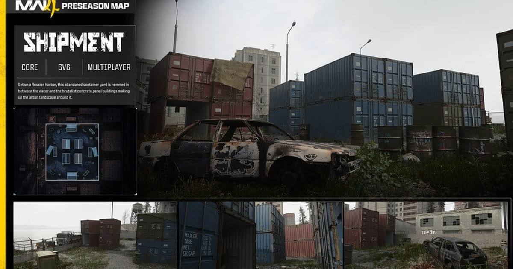

Modern Warfare 4's Halloween Week: Shipment Returns, Possession Possesses, and Infected Is Back Today
The pre-season drops keep coming: Shipment returned October 27, the brand-new Possession mode landed October 29, and the classic Infected mode arrives today, October 30 — all warming up Season 1 on November 6.

Before Season 1 even starts, Modern Warfare 4 is already in its Halloween era. Three pre-season drops have rolled out in four days, and they are a perfect little sampler of what this game is: one beloved classic, one brand-new idea, and one party mode that never really left.
Shipment is back (October 27)
First up, the map everybody knows by heart. Shipment returned on October 27 as a remastered pre-season map, set in a Russian harbor — an abandoned container yard hemmed in between the water and brutalist concrete panel buildings. It supports 6v6 multiplayer, and it is exactly what it has always been: tiny, chaotic, and the fastest way to grind weapon challenges. If you have ever played Call of Duty, you already know every corner of this map. That is the point.
Possession is the new idea (October 29)
Then came the genuinely new thing. Possession, which landed October 29, is a party mode with a twist nobody asked for and everybody will argue about: when you eliminate an enemy, you possess them. You teleport to their spot and take their loadout. Activision describes it running on Hardpoint and Search and Destroy rules, which means every kill is not just a point — it is a relocation, a new gun, and a completely different plan. Get it right and you are suddenly holding the objective from the other team's side of the map. Get it wrong and you just handed them your position.
Infected returns today (October 30)
And today, the classic. Infected is back for Halloween week: one player starts infected, and every survivor they eliminate joins the infected side until the last holdouts are cornered. The loadouts tell you everything about how this version plays. The infected get the FSS Carbon Edge Combat Knife, a Throwing Knife, and the Ninja perk — fast, quiet, and close. Survivors start with the Rezi 12 Shotgun firing explosive slugs, plus a Trip Wire and a Concussion Grenade — loud, messy, and built for holding a corner until the clock runs out.
Why this week matters
None of these three drops is Season 1. That is the point. Shipment, Possession, and Infected are the warm-up act, and they are doing exactly what a warm-up should do: get the weapon grind moving, get the party modes populated, and get everybody talking before November 6, when the season, the Battle Pass, and Warzone's new era all land at once. One note: Activision has not published exact start times for Possession or Infected, so if a mode is not in your playlist tab yet, check back on the day — the dates are confirmed, the hours are not.
Sources: Nintendo Life, GameBeacon, Pixel Herald
Gear up: Razer — mice, keyboards, headsets and laptops.